All the substances in our surrounding are made up of atoms and molecules. These atoms and molecules are always at vibratory motion. Due to this motion, substances have an energy known as heat energy. This energy flows from hot substances to cold substances or from hot region to cold region of a substance. When heat energy is supplied to any substance it increases the energy of the atoms and molecules in it and so they start to vibrate. These atoms and molecules which vibrate make other atoms and molecules to vibrate. Thus, heat energy is transferred from one part of the substance to other part. We can see this heat energy transfer in our daily life also. Heat energy brings about lot of changes. You will learn about them in this lesson. You will also study about transfer of heat and measurement of heat change.
When heat energy is supplied to any substance, it brings about many changes. There are three important changes that we can see in our daily life. They are:
Activity 1: Take a metal ball and a metal ring of suitable diameter. Pass the metal ball through the ring. You can observe that the metal ball can easily go through it. Now heat the metal ball and then try to pass it through the ring. It will not pass through the ring. Keep the metal ball on the ring for some time. In few minutes, it will fall through the ring.
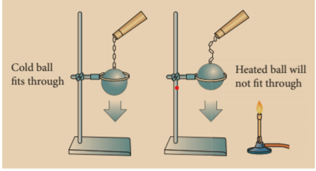
Why didn’t the ball go through the ring initially but went through it after some time? When the ball is heated the atoms in the ball gain heat energy. They start vibrating and force each other apart. As a result an expansion takes place. That’s why the ball did not go through the ring. After some time, as the ball lost the heat energy to the surrounding it came back to its original size and it went through the ring. This shows that heat energy causes expansion in solids. This expansion takes place in liquids and gases also. It is maximum in gases.
Do you Know?
Electric wires used for long distance transmission of electricity will expand during day time and contract at night. That is why they will not be set very tightly. If they are set very tightly they will break when they cool at night.
Activity 2: Take a cup of water and note its temperature. Heat the water for few minutes and note the temperature again. Do you find any increase in the temperature? What caused the temperature change?
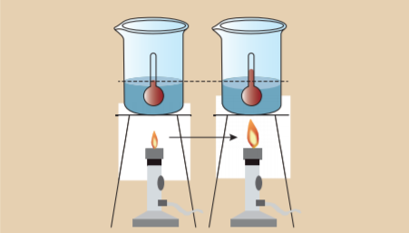
When the water is heated, water molecules receive heat energy. This heat energy increases the kinetic energy of the molecules. When the molecules receive more energy, the temperature of the water increases. This shows that heat energy causes increase in temperature.
Activity 3: Take few ice cubes in a container and heat them for some time. What happens? The ice cubes melt and becomes water. Now heat the water for some time. What do you observe? The volume of water in the vessel decreases. What do you understand from this activity?
In ice cubes the force of attraction between the water molecules is more. So, they are close together. When we heat them the force of attraction between the molecules decreases and the ice cubes become water. When we heat the water, the force of attraction decreases further. Hence, they move away from one another and become vapour. Since water vapour escape to the surrounding, water level decreases further. From this we understand that heat energy causes change in the state of the substances. When heat energy is removed, changes take place in reverse direction.
If heat energy is supplied to or taken out from a substance, it will undergo a change from one state of matter to another.
One of the following transformations may take place due to heat energy.
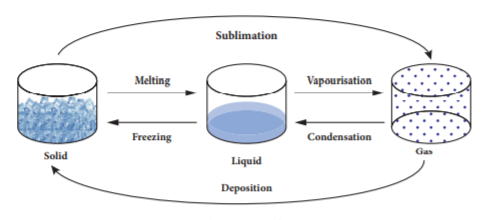
Do you know?
Water is the only matter on the Earth that can be found naturally in all three states - Solid, Liquid and Gas.
If heat energy is supplied to any substance, it will be transferred from one part of the substance to another part. It takes place in different ways depending on the state of the substance. Three ways of heat transfer are:
Activity 4: Take some hot water in a cup and put a silver spoon in it. Leave the spoon inside the water for some time. Now touch the other end of the spoon. Do you feel the heat?
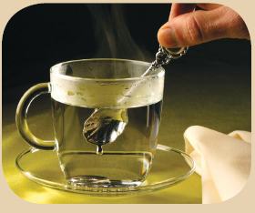
How did the other end of the spoon become hot? It is because heat in the hot water is transferred from one end to another end of the spoon. In solid substances such as silver spoon, atoms are arranged very closely. Hot water molecules which are vibrating transfer the heat energy to the atoms in the spoon and make them vibrate. Those atoms make other atoms to vibrate and thus heat is transferred to the other end of the spoon.
In conduction heat transfer takes place between two ends of the same solid or through two solid substances that are at different temperatures but in contact with one another. Thus, we can define conduction as the process of heat transfer in solids from the region of higher temperature to the region of lower temperature without the actual movement of atoms or molecules.
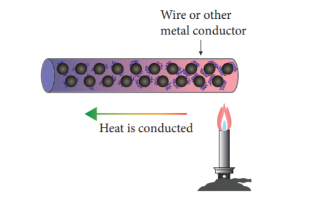
Do you know?
All metals are good conductors of heat. The substances which does not conduct heat easily are called bad conductors or insulators. Wood, cork, cotton, wool, glass, rubber, etc are insulators.
Conduction in daily life
Activity 5: Take some water in a vessel and heat it on a stove. Touch the surface of the water. It will be cold. Touch it after some time. It will be hot now. How did the heat which was supplied at the bottom reach the top?
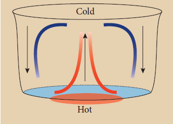
When water in the vessel is heated, water molecules at the bottom receive heat energy and move upward. Then the molecules at the top comes down and get heated. This kind of heat transfer is known as convection. This is how air in the atmosphere is also heated. Thus, the form of heat transfer from places of high temperature to places of low temperature by the actual movement of molecules is called convection. Convection takes place in liquids and gases.
Convection in daily life
Radiation is the third form of heat transfer. By conduction, heat is transferred through solids, by convection heat is transferred through liquids and gases, but by radiation heat can be transferred through empty space even through vacuum. Heat energy from the Sun reaches the Earth by this form of heat transfer. Radiation is defined as the way of heat transfer from one place to another in the form of electromagnetic waves.
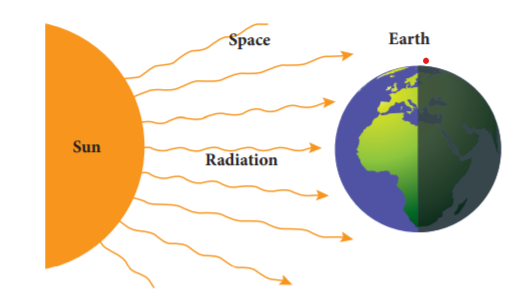
Radiation in daily life
Do you know?
Heat transfer by radiation is visible to our eyes. When a substance is heated to 500°C the radiation begins to become visible to the eye as a dull red glow, and it is sensed as warmth by the skin. Further heating rapidly increases the amount of radiation, and its perceived colour becomes orange, yellow and finally white.
We studied about the effects of heat energy. When heat energy is supplied to substances, physical changes take place in them. Solid form of water (ice) is changed to liquid form, and liquid form of water is changed to gaseous form. These are all the physical changes due to heat energy. Similarly, heat energy produces chemical changes also. To know more about the physical and chemical changes that take place in substances, we need to measure the amount of heat involved. The technique used to measure the amount of heat involved in a physical or a chemical process is known as calorimetry.
Temperature is a physical quantity which expresses whether an object is hot or cold. It is measured with the help of thermometer. There are three scales to measure the temperature. They are:
Among these three scales, Kelvin scale is the most commonly used one. You will study about this elaborately in Standard nine.
We know that heat is a form of energy. The unit of energy in S I system is joule. So, heat is also measured in joule. It is expressed by the symbol J. The most commonly used unit of heat is calorie. One calorie is the amount of heat energy required to raise the temperature of 1 gram of water through 1 degree Celsius. The relation between calorie and joule is given as, 1 calorie equal to 4.186 J.
Do you know?
The amount of energy in food items is measured by the unit kilo calorie. 1 kilo calorie equal to 4200 Juile (Approximately).
Activity 6: Take some amount of water and cooking oil in two separate vessels. Heat them till they reach a particular temperature (Caution: Heat the oil under the supervision of your teacher). Which one is heated first? Water will take more time to get heated. Why?
In general, the amount of heat energy gained or lost by a substance is determined by three factors. They are:
Different substances require different amount of heat energy to reach a particular temperature. This nature is known as heat capacity of a substance. Heat capacity is defined as the amount of heat energy required by a substance to raise its temperature by 1 degree C or 1 K. It is denoted by the symbol C.
Heat capacity equal to Amount of heat energy required (Q) by Raise in temperature (Δ T)
C equal to Q by del T
The unit of heat capacity is cal by degree Celsius. In SI system, it is measured in J K power minus 1
Do you Know?
Water has higher heat capacity than most other substances. This accounts for the use of water as common coolant. 100 gram of water can take away more heat than 100 gram of oil.
Problem 1
The temperature of a metal ball is 30 degree Celsius. When an energy of 3000 J is supplied, its temperature raises by 40 degree Celsius. Calculate its heat capacity.
Solution
Heat capacity, C dash equal to Q by del T
Here, Q equal to 3000 Juile
del T equal to 40 degree Celsius minus 30 degree Celsius equal to 10 degree Celsius or 10 K
C' equal to 3000 by 10 equal to 300 J K power minus 1
The heat capacity of the metal ball is 300 J K power minus 1.
Problem 2
The energy required to raise the temperature of an iron ball by 1 K is 500 J K power minus 1. Calculate the amount of energy required to raise its temperature by 20 K.
Solution
Heat capacity, C dash equal to Q by del T
Q equal to C dash into del T
Here, C dash equal to 500 J K power minus 1.
del T equal to 20 K
Q equal to 500 into 20 equal to 10000 J.
The amount of heat energy required is 10000 J.
When the heat capacity of a substance is expressed for unit mass, it is called specific heat capacity. Specific heat capacity of a substance is defined as the amount of heat energy required to raise the temperature of 1 kilogram of a substance by 1 degree Celsius or 1 K. It is denoted by the symbol C.
Specific heat capacity
Equal to Amount of heat energy required (Q) by Mass into Raise in temperature del T
C equal to Q by m into del T
The S I unit of specific heat capacity is J kg power minus 1 K power minus 1
Problem 3
An energy of 84000 J is required to raise the temperature of 2 kg of water from 60 degree Celsius to 70 degree Celsius. Calculate the specific heat capacity of water.
Solution
Specific heat capacity, C equal to Q by m into del T
Here, Q equal to 84000 J
m equal to 2 kilogram
del T equal to 70 degree Celsius minus 60 degree Celsius equal to 10 degree Celsius or 10 K
C equal to 84000 by 2 into 10 equal to 4200 J kg power minus 1 K power minus 1
The Specific heat capacity of water is 4200 J kg power minus 1 K power minus 1
Problem 4
The specific heat capacity of a metal is 160 J kg power minus 1 K power minus 1. Calculate the amount of heat energy required to raise the temperature of 500 gram of the metal from 125 degree Celsius to 325 degree Celsius.
Solution
Specific heat capacity, C equal to Q by m into del T
Q equal to C into m into del T
Here, C equal to 160 J kg K power minus 1 m equal to 500 g equal to 0.5 kg
Del T equal to 325 degree Celsius minus 125 degree Celsius equal to 200 degree Celsius or 200 K
Equal to 160 into 0.5 into 200 equal to 16000 J.
The amount of heat energy required is 16000 J.
A calorimeter is a device used to measure the amount of heat gained or lost by a substance. It consists of a vessel made up of metals like copper or aluminium which are good conductors of heat and electricity.
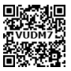
The metallic vessel is kept in an insulating jacket to prevent heat loss to the environment. There are two holes in it. Through one hole a thermometer is inserted to measure the temperature of the contents. A stirrer is inserted through another hole for stirring the content in the vessel. The vessel is filled with liquid which is heated by passing current through the heating element. Using this device we can measure the heat capacity of the liquid in the container.
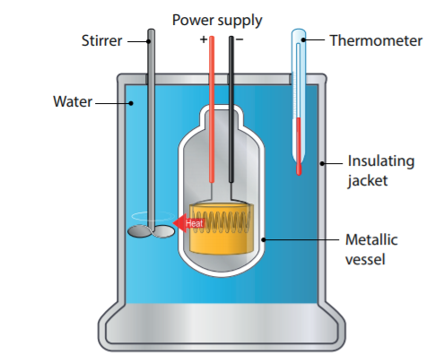
Do you know?
The world’s first ice-calorimeter was used in the year 1782 by Antoine Lavoisier and Pierre. Simon Laplace, to determine the heat generated by various chemical changes.
A thermostat is a device which maintains the temperature of a place or an object constant. The word thermostat is derived from two Greek words, ‘thermo’ meaning heat and ‘static’ meaning staying the same. Thermostats are used in any device or system that gets heated or cools down to a pre-set temperature. It turns an appliance or a circuit on or off when a particular temperature is reached. Devices which use thermostat include building heater, central heater in a room, air conditioner, water heater, as well as kitchen equipment including oven and refrigerators. Sometimes, a thermostat functions both as the sensor and the controller of a thermal system.
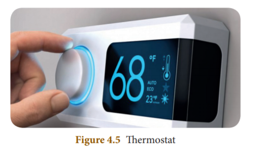
The thermos flask (Vacuum flask) is an insulating storage vessel that keeps its content hotter or cooler than the surroundings for a longer time. It is primarily meant to enhance the storage period of a liquid by maintaining a uniform temperature and avoiding the possibilities of getting a bad taste.
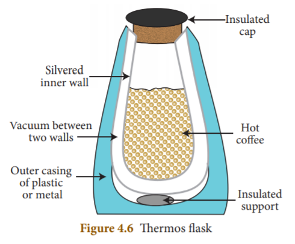
Do you know?
The vacuum flask was invented by Scottish scientist Sir James Dewar in 1892. In his honour it is called as Dewar flask. It’s also known as Dewar bottle.
Working of Thermos flask
A thermos flask has double walls, which are evacuated. It is silvered on the inside. The vacuum between the two walls prevents heat being transferred from the inside to the outside by conduction and convection.
With very little air between the walls, there is almost no transfer of heat from the inner wall to the outer wall or vice versa. Conduction can only occur at the points where the two walls meet, at the top of the bottle and through an insulated support at the bottom. The silvered walls reflect radiated heat back to the liquid in the bottle.
Calorimeter - A device which measures the heat capacity of liquids.
Calorimetry - The technique used to measure the amount of heat involved in a physical or a chemical process.
Conduction - The process of heat transfer in solids from a region of higher temperature to a region of lower temperature without the actual movement of molecules.
Convection - The form of heat transfer from places of high temperature to places of low temperature by the actual movement of liquid or gas molecules.
Heat capacity - Amount of heat energy required to raise the temperature of a substance by 1°C or 1 K.
Radiation - The form of heat transfer from one place to another place in the form of electromagnetic waves.
Specific heat capacity - Amount of heat energy required to raise the temperature of 1 kilogram of a substance by 1°C or 1 K.
Temperature - Physical quantity which expresses whether an object is hot or cold.
Thermos flask - An insulating storage vessel that keeps its content hotter or cooler than the surroundings for a longer time.
Thermostat - A temperature sensing device that turns an appliance or circuit on or off when a particular temperature is reached in it.